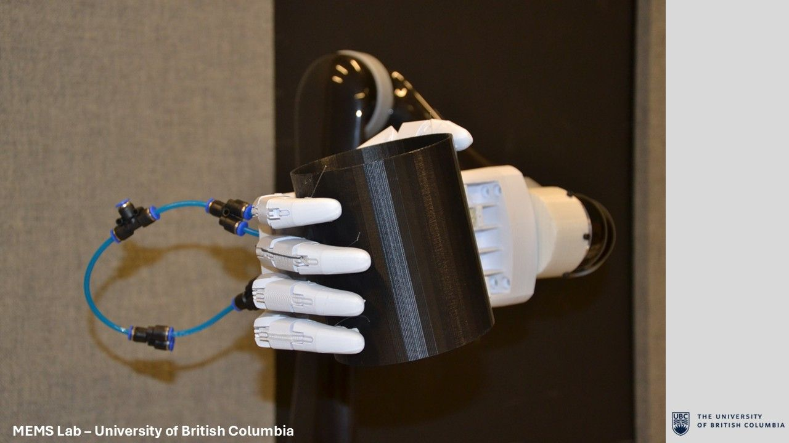
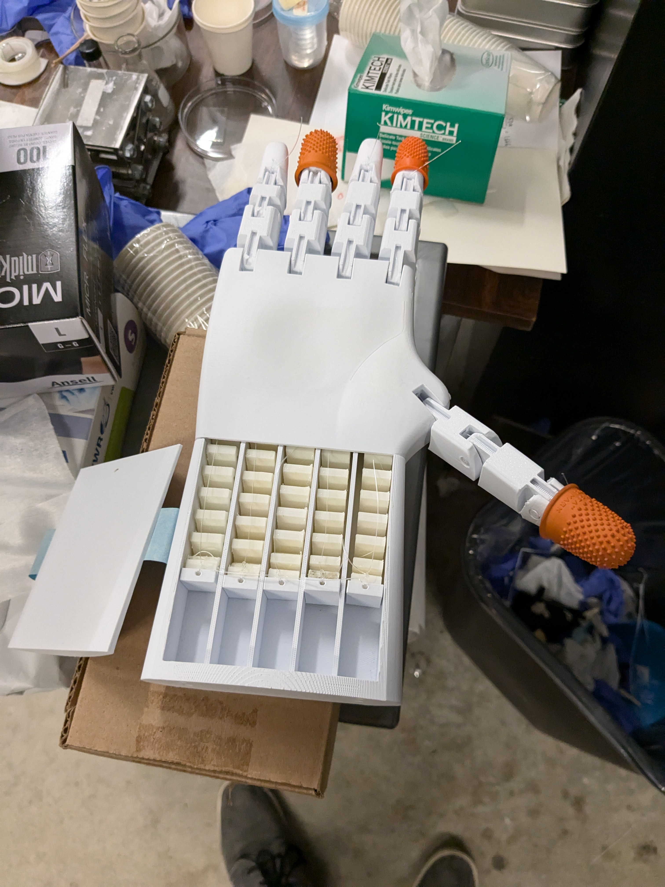
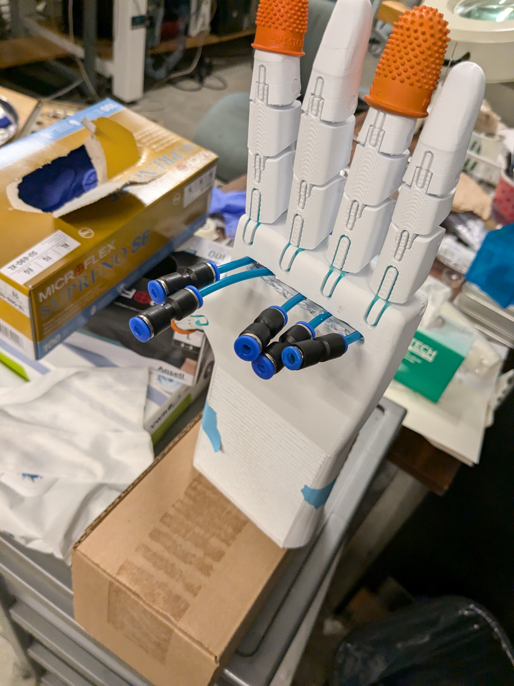
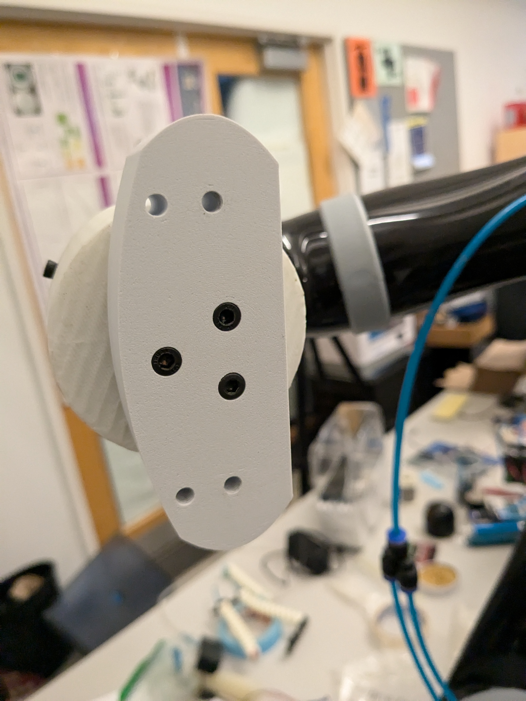
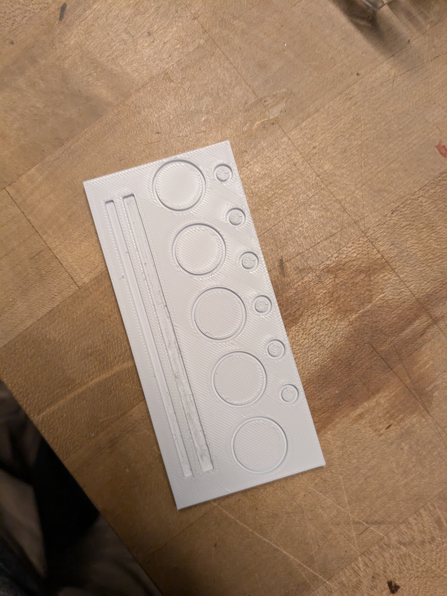
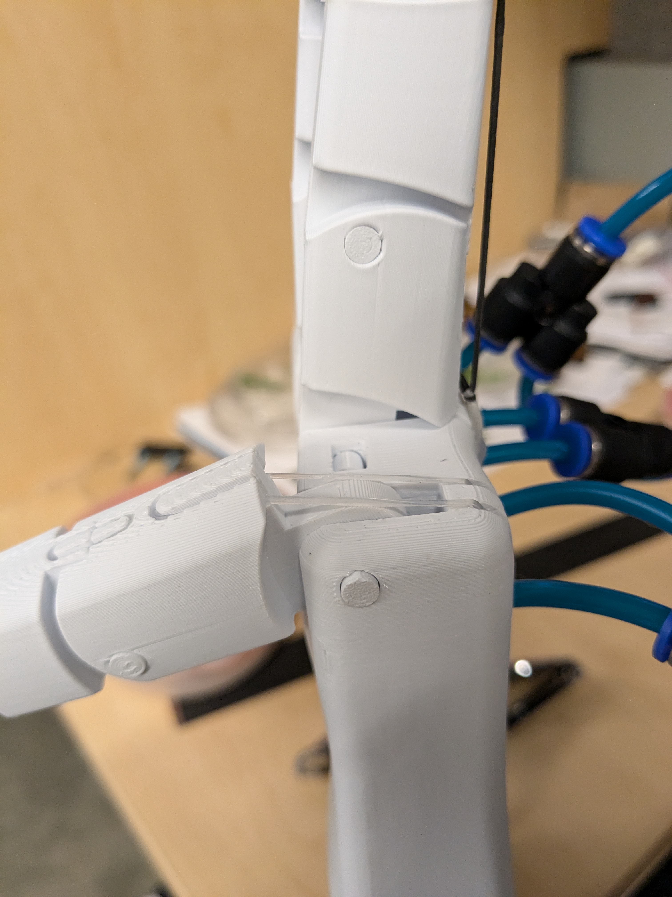
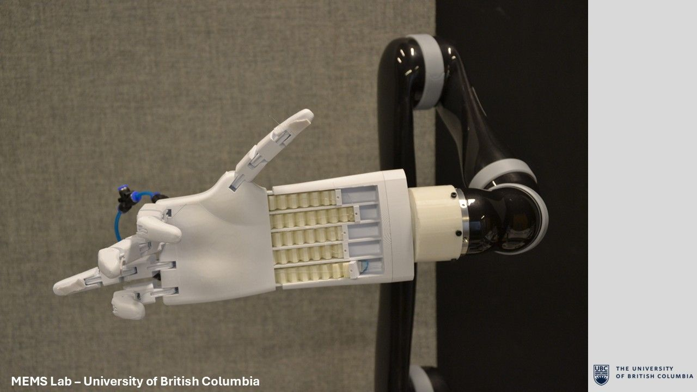
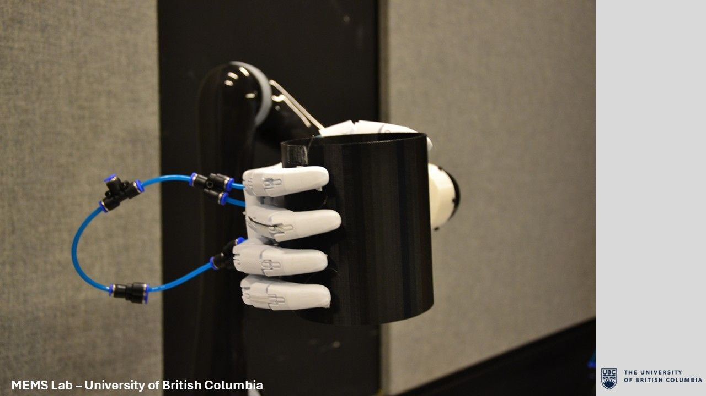

MEMS Soft-Actuated Hand
A tendon-driven prosthetic hand designed to demonstrate the lab's soft pneumatic robotic actuators.

Project Summary
- Researched tendon-driven prosthetics and iterated the 3D-printed mechanism.
- Tuned a custom silicone return system around the actuators' force limits.
- A human-shaped robotic hand with five wrist-mounted soft pneumatic actuators.
- Tendon-driven fingers and a custom Kinova arm adapter.
- Demonstrated a natural open-hand posture and a grasp around a large object.
- Kept the pneumatic lines clear of the working surface.
Opportunity
My interest in prosthetics and robotics led me to join the UBC MEMS Lab, where I was tasked with developing a physical demonstration for the soft pneumatic robotic actuators the lab was designing. The goal was to place the actuators in an application people could immediately understand: a robotic hand able to grasp everyday objects.
Research & Design
The actuators could not drive the fingers directly, so I began with an extensive review of existing tendon-driven prosthetic-hand designs. I then developed my own mechanism around the actuators' geometry and force limitations, using tendons to translate each actuator's contraction into finger flexion.
After many 3D-printed iterations, I settled on a natural hand shape with individually articulated fingers. The hand rests in a naturally open position, the actuators are housed in the wrist, and the pneumatic lines exit from the back of the hand so they stay clear of the palm and do not interfere with grasping.



CAD Model
The model below is the SolidWorks assembly used to develop the mechanism and package the hand, tendons, actuators, and wrist enclosure. Drag to inspect the static model from any angle.
Return Mechanism
The prototype actuators were powerful enough to pull the tendons, but not strong enough to overcome the commercial rubber bands I initially used to hold the hand open and return it to its starting position. The return force had to be reduced without losing consistent finger extension.
I designed and 3D printed a mold, then cast custom silicone bands with thinner, controlled cross-sections. Iterating the bands alongside the printed hand gave the mechanism a light enough return force for the actuators while still reopening the fingers after each grasp.


Results
The final prototype packaged five soft pneumatic actuators into the wrist of a human-shaped, tendon-driven hand. Mounted to the Kinova arm, it successfully demonstrated both an open-hand posture and a grasp around a large object while keeping its pneumatic hardware clear of the working surface.

